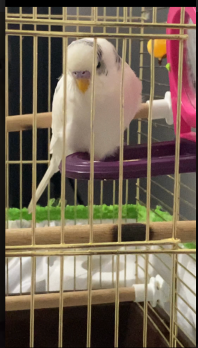
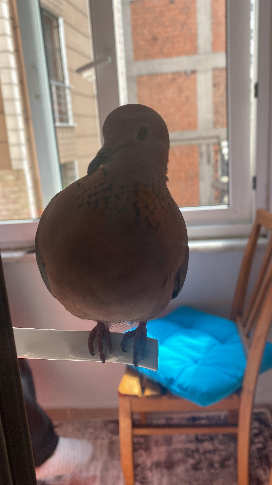

- 

Limon boy yine görselden de gördüğünüz üzere limon sarısı renge sahip yavru bir muhabbet kuşudur. Yavru olması sebebi ile karakteri hakkında herhangi bir öngörümüz bulunmamaktadır. İlerleyen zamanlarda bunu aktarıyor olacağız.
Kuyruksuz
- 
Kuyruksuz aslında muhabbet kuşu kategorisinde olmayan bir kumrudur. Fakat gerek insanlara karşı olan sıcak tavrı gerek vefası olsun bizi can evimizden vuran bir kuş olmuştur. Kendisini çok sevmekle birlikte sayfamızda onada yer vermek istedik.
Pamus Boy
Pamus boy 2020 yılında dünyaya geldi. Annesi cansu ile tanışması 2020 aralık ayında gerçekleşti. Çok inatçı olan bu kuş yeni ailesini sevmesiyle birlikte çok uslu ve akıllı bir çocuk oldu.
Mavis Boy
Mavis boy 2019 doğumlu uysal bir muhabbet kuşu. Resimdende gördüğünüz üzere sürekli masum bakarak masum bakışları ile sahiplerinin kalbini çalan bir kuştur.